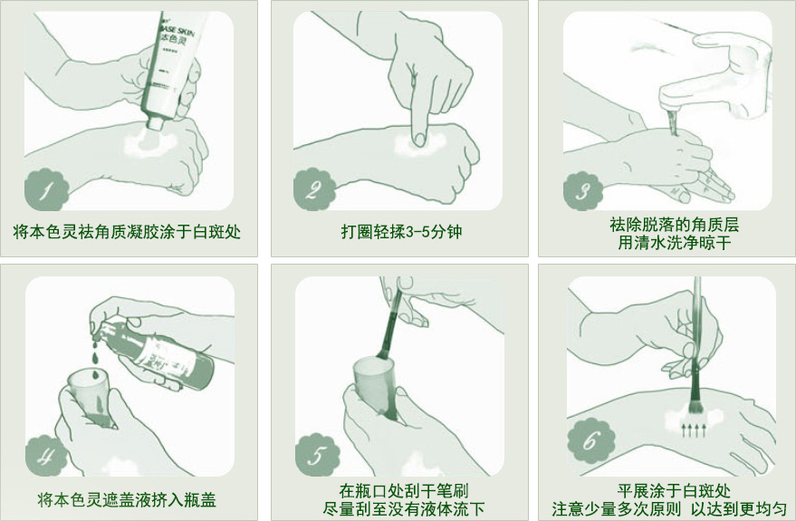

遮盖液是一种有专门针对白癜风、白斑人群的特殊化妆品，它是一种耐水、耐磨、长效、安全的专门用于白癜风引起的白斑皮肤的遮盖液，它不怕水洗，不怕出汗，防水耐磨，可维持的时间为2～7天，同时不影响其他治疗性药物的吸收。
遮盖液优势
The advantage of covering liquid
-
先进性
全球第一个用于白癜风美容的产品，并获得中华人民共和国国家发明专利
-
耐水性
生物色素，不怕水洗，不怕流汗，可以洗澡游泳
-
耐磨性
手擦不掉，保留牢固
-
长效性
涂抹一次最佳可以保持3-4天，一般保留4-7天，完全褪色需要7-15天
-
安全性
天然植物提取，生成的生物色素只与最外层表皮角质层细胞络合，不进入毛孔也不透过表皮，因而安全性高，且不影响正在或即将进行的治疗；
-
自然美观
可和正常肤色一模一样；
-
使用方便
多涂着色深，少涂着色浅，褪色可补涂，轻轻松松涂抹，完完美美遮盖；
-
效果迅速
当时涂抹，当时见效，8小时后不怕水洗！
最好的，当然更受患者青睐
Best, certainly more popular with patients.
据权威部门统计：选择白癜风遮盖液的病友，连续7年增长率超过300%，有多年遮盖经验的病友，青睐盖百霖。
-
- 上市时间
- 2004年上市，全球第一个白癜风遮盖老品牌，白癜风遮盖之父胡发刚创办，10年老品牌
- 公司和商标注册于2011年左右，却号称2003年就开始研发
-
- 专利技术
- 发明专利：白癜风遮盖关键物质-ACS深海活藻涣皮肤素纯天然植物成分
- 所谓的全部专利成分竟然是：冰醋酸、色素、羟基丙酮和香精等化学工业成分
-
- 成 份
- 医药级质量的，纯天然植物成分生产，保证产品品质和安全性
- 医药级质量的，纯天然植物成分生产，保证产品品质和安全性
-
- 销 量
- 全国每卖出去10瓶白斑遮盖液，有9瓶是盖百霖
- 网上销量数据造假手段层出不穷，具有很强的欺骗性，数量数据不可信
-
- 药店有售
- 同仁堂等400多家知名药店联合推荐，在全国420多家正规药店有售
- 工业级原料生产，只在网上销售，无法进入药店
遮盖液使用注意事项
Best, certainly more popular with patients
-
使用前
使用遮盖液前，患者要先在不太
明显处先小面积的刷一层，七
八个小时以后进行观察，如
无明显异常，即可开始
使用。
-
使用时
遮盖液涂抹的次数和涂抹的厚度
是根据个人的病情、肤色不同
有差异的，所以，肤色较浅
的人涂抹一遍即可，肤色
较深可适当多涂。
-
使用后
千万不要经常的用水清洗患处，频
繁清洗可能会缩短皮肤细胞代谢
周期，尤其减少热水接触皮肤
患处。

导语
如果一味的运用白癜风遮盖液遮盖的话只能是看到表面的疗效而不能够彻底的医治好疾病，这也有点遮掩患病情况的感觉，所以说当你必然要用白癜风遮盖液的时候能够运用但是不能够耽搁了医治才行。
JC-多维白癜风康复体系
JC- Multidimensional vitiligo rehabilitation system
-

自体黑色素细胞可分为，表皮片移植、表皮细胞悬液移植、黑色素细胞移植等，根据患者的体质和患病情况而制定治疗方案，结合中药辅助调理。
适合分型局限型、散在型、肢端型、节段型（稳定期）
适合分色瓷白色、云白色、乳白色、淡白色
点击咨询该疗法
-

我院进口美国308激光治疗结合德国蓝氧自体净血治疗仪，紫外线结合蓝氧将经特殊处理的蓝氧（O3）导入血液，改善细胞新陈代谢，增强细胞活性，加快脏腑功能恢复，促进受损皮肤细胞修复；结合中药调理。
适合分型寻常型、节段型（进展期、稳定期）
适合分色瓷白色、云白色
点击咨询该疗法
-

我院引进国际上最先进的"308nm准分子激光"。该技术在欧美被称为"白癜风、银屑病的终结者","308nm准分子激光"对正常皮肤没有损伤,效果显著,只需照射几秒即可完成;简便快捷,不影响正常生活和学习。
适合分型寻常型、节段型（进展期、稳定期）
适合分色瓷白色、云白色
点击咨询该疗法
-

蓝氧净血免疫疗法，又称为蓝氧自体血疗法。是以"病在肌肤、根在脏腑、源于血液"的医学理论为基础，将经特殊处理的蓝氧（O3）导入血液，可增加血氧含量，改善细胞新陈代谢，增强细胞活性。
适合分型寻常型、节段型（进展期、稳定期）
适合分色瓷白色、云白色
点击咨询该疗法
-

通过无针注射器在设备的引导下直接对病灶局部进行快速渗透吸收治疗，增加自体光敏感和吸收，激活酪氨酸酶活性，提高免疫性，抑制T细胞的快速生长，从而达到治疗的目的。
适合分型寻常型、节段型（进展期、稳定期）
适合分色瓷白色、云白色、乳白色、淡白色
点击咨询该疗法
五大中药辨证辅助治疗治病根
Five kinds of medicine adjuvant therapy
-

气血不和证
好发于头面、颈、双上肢或泛发全身。白斑光亮色泽，病起突然，发展迅速，一般无自觉症状或有轻微痒感;舌淡红苔薄白。
-

湿热内蒸证
多发于面部及五官周围，皮损呈粉白色，边界清楚，皮损出现前常有明显瘙痒，或有皮肤过敏史，兼见困倦，头重，纳呆。
-

瘀血阻络证
病程日久，皮损局限一处或泛发全身，或发生在外伤部位，白斑发展缓慢，白斑内毛发变白;舌暗红或有瘀点瘀斑，脉涩。
-

肝肾不足证
病久或有家族史，皮损泛发或局限，色乳白，白斑区毛发变白，病情发展缓慢，兼见皮肤干燥，头昏眼花，腰膝酸软。
-

肝郁气滞证
病白斑无固定好发部位，色泽时暗时明，常随情绪波动而加重;伴胸闷暖气，性情急躁，两胁胀痛，月经不调，乳胀结块。
七大系统配合治疗
Seven systems with treatment

- 个性化食疗

- 心理疏导

- 中药渗透

- 最佳308nm激光

- 蓝氧自体净血

- 黑色素细胞培植

- 自体表皮移植
20000余例患者验证了"JC-多维白癜风康复体系"
More than 20,000 cases of patients recovered Case
见证典型案例
Typical Case
-

姓名：角田先生 症状：泛发型，在脸上+口周+小腿等 疗法：美国308准分子激光
【患者概况】角田先生，日本人，47岁，在上海浦东某公司工作。2011年1月8日，在上海江城皮肤病医院杨林主任的诊室，提起自己的白癜风病史，角田先生边用不算流利的汉语说着，边用两手的手指比划着，做出十字的形状，"大概有十年。"
-

姓名：小耿 症状：泛发型白癜风 疗法：自体表皮黑色素细胞移植法
【患者概况】前后四个月，小伙的皮肤终于恢复了健康的本色。2009年12月，他高兴地向顾教授 及上海江城皮肤病医院的白衣天使赠送了一面锦旗，上面写着纯朴而又真诚的心声："实实在在有效，真真正正放心。
-

姓名：张先生 症状：泛发型白癜风 疗法：自体表皮黑色素细胞种植法
【患者概况】来自山东的张先生，年轻轻的却成了皮肤病的重灾户：头部长着牛皮癣，身上生着白癜风。七年来，他在老家看了不少医生，却始终没有好转。
-

姓名：钟先生 症状：泛发型 左侧脸部+发际线周围 疗法：自体表皮黑色素细胞移植术
【患者概况】钟先生，40岁，江苏。白癜风造成"毁容"，连片发于左侧面部、左眼部、前额、唇部，以及头左侧近发际线的发根部。多地求医，长期药物治疗不见效果。
-

姓名：朱先生 症状：泛发型 全身及四肢 疗法：自体表皮黑色素细胞移植术+中药
【患者概况】朱先生今年50岁,少年时得了白癜风,当时只是腰上有一二个小块.到20岁时,患处蔓延到全身及四肢.三十年来,他不断寻医问药,然而病情却仍在发展恶化,对他的生活和事业都带来严重影响。
-

姓名：德国工程师科尔 症状：局限型 额头白癜风 疗法：308激光+黑色素细胞移植+中药
【【患者概况】德国工程师科尔，来上海一家外企工作，头部上额长了白癜风，通过网上查询，于2009年6月来到上海江城皮肤病医院，经杨林主任用本院研发的特色疗法，仅用二个月，就消除了白斑，为此，他对中国的医术大为称赞。
医院简介
Hospital introduction
患者评论
Patients Comments
-
产品优势
-
山寨货隐患
-
注意事项
-
治 疗
-
康复案例
-
医院简介